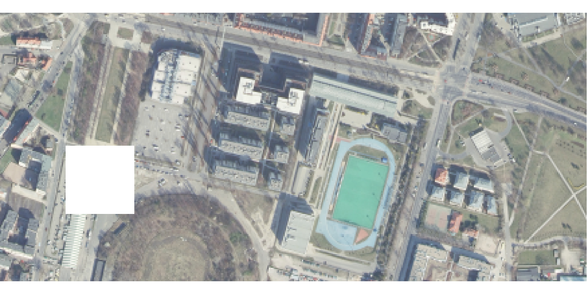
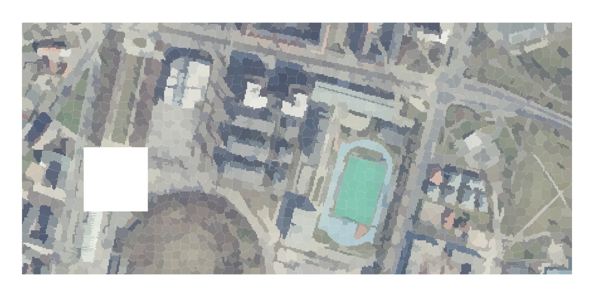

Superpixels of an RGB raster
Jakub Nowosad
2021-08-29
Source:vignettes/articles/rgb_vars.Rmd
rgb_vars.RmdSuperpixels is a collection of segmentation concepts of grouping pixels with similar characteristics. It is often used in computer vision to delineate parts of RGB images that are more meaningful and easier to analyze. When applied to RGB images, each superpixel contains similar colors that also could represent real-world objects. A large number of methods for creating superpixels were developed in the last decades, with the SLIC algorithm (Achanta et al. (2012), doi:10.1109/TPAMI.2012.120) being the most prominent.
The supercells package aims to utilize the concept of superpixels to a variety of spatial data. This package works on spatial data with one variable (e.g., continuous raster), many variables (e.g., RGB rasters), and spatial patterns (e.g., areas in categorical rasters). Therefore, It enables not only to find areas that look similar on an RGB (satellite) image, but also to regionalize areas with comparable values of one or more variables.
This vignette shows how to use the supercells package on an RGB raster dataset. To reproduce the following results on your own computer, install and attach the packages:
library(supercells) # superpixels for spatial data
library(terra) # spatial raster data reading and handling
library(sf) # spatial raster data reading and handlingThe first step is to read the input data. This time our input data ortho.tif, included in the supercells package, contains three layers representing red, green, and blue satellite bands1.
ortho = rast(system.file("raster/ortho.tif", package = "supercells"))
plot(ortho)
The supercells() function will be used to delineate areas with similar colors - they could potentially represent the same objects (e.g., buildings) or land covers (e.g., grasses). For an RGB image we can use one additional argument called transform = "to_LAB". This means that internal calculation will be done on the LAB color space instead on the RGB input one.
ortho_slic1 = supercells(ortho, k = 2000, compactness = 10,
transform = "to_LAB")
ortho_slic1The ortho_slic1 output is an sf object, where each row stores superpixels id (supercells), coordinates of the superpixels’ centroids (x and y), and an average of all of the input variables (red, green, and blue colors).
This allows us to create two types of visualizations. The first one is just an overlay of the superpixels borders on top of the original RGB image.
plot(ortho)
plot(st_geometry(ortho_slic1), add = TRUE)
The second visualization type requires converting the average RGB values into their hexadecimal representation first.
rgb_to_hex = function(x){
apply(t(x), 2, function(x) rgb(x[1], x[2], x[3], maxColorValue = 255))
}
avg_colors = rgb_to_hex(st_drop_geometry(ortho_slic1[4:6]))Next, we can plot each superpixel with its average color, but without the border lines:
plot(st_geometry(ortho_slic1), border = NA, col = avg_colors)
Note that the above visualization is not an image - it is a set of colored superpixels. Therefore, instead of representing this area by 87,600 cells, we are using (just) 1,675 superpixels.
The ortho_slic1 object can be next use for clustering similar objects or labeling them.
References
Achanta, Radhakrishna, Appu Shaji, Kevin Smith, Aurelien Lucchi, Pascal Fua, and Sabine Süsstrunk. 2012. “SLIC Superpixels Compared to State-of-the-Art Superpixel Methods.” IEEE Transactions on Pattern Analysis and Machine Intelligence 34 (11): 2274–82.
It also has an empty square on the left part of the image for testing purposes.↩︎